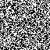
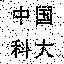

基于Arnold与DWT的盲水印算法
计算机科学与技术学院 PB22030796 黄宇轩
1. 科学技术原理
1.1 研究背景
随着互联网的快速发展，数字信息能更加高效便捷地进行传递。但也因此，版权问题日
益突出。数字水印被认为是解决版权保护问题最具潜力的技术之一，涉及图像处理、数字通信、密码学等领域。数字水印充分利用图像的像素特
点，在不影响图片使用价值的前提下，将数字水印永久地嵌入原始载体中。
现代数字水印技术发展迅速，已有多种实现路径。LSB隐写算法原理简单，透明性高，但鲁棒性较差，在遭到频域攻击后难以提取水印。离散余
弦（DCT）算法较为成熟，也有较好的鲁棒性，但会牺牲图像质量，在对图像质量要求高的场合不适用。轮廓波（Contourlet）变换
具有优良的抗攻击性，但不能实现盲提取水印，对原图也有较高要求。
本文采用离散小波变换进行水印的盲注入，在知晓注入规则与密钥的情况下，可以只根据带有水印的图像进行
水印盲提取。
1.2 离散小波变换
在数字图像处理中，需要将连续的小波及其小波变换离散化。一般计算机实现中使用二进制离散处理，将经过这种离散化的小波及其相应的小波
变换成为离散小波变换（简称DWT）。实际上，离散小波变换是对连续小波变换的尺度、位移按照2的幂次进行离散化得到的，所以也称之为二
进制小波变换。
小波分解的意义就在于能够在不同尺度上对信号进行分解，而且对不同尺度的选择可以根据不同的目标来确定。
对于许多信号，低频成分相当重要，它常常蕴含着信号的特征，而高频成分则给出信号的细节或差别。人的话音如果去掉高频成分，听起来与以前
可能不同，但仍能知道所说的内容；如果去掉足够的低频成分，则听到的是一些没有意义的声音。在小波分析中经常用到近似与细节。近似表示信
号的高尺度，即低频信息；细节表示信号的高尺度，即高频信息。因此，原始信号通过两个相互滤波器产生两个信号。
通过不断的分解过程，将近似信号连续分解，就可以将信号分解成许多低分辨率成分。理论上分解可以无限制的进行下去，但事实上，分解可以进
行到细节（高频）只包含单个样本为止。因此，在实际应用中，一般依据信号的特征或者合适的标准来选择适当的分解层数。

图1-1 离散小波变换原理架构
1.3 Arnold置乱算法
Arnold变换，又称猫脸变换，是一种对图像进行置乱的算法，使原本有意义的图像变成一张无意义的图像，通常需要进行
多次才能达到理想的混乱效果。Arnold变换具有周期性，也就是说对一张图连续地进行Arnold变换，最终可以得到原图。周期和图像尺寸
有关。图像为正方形时，Arnold存在逆变换。
正方形图像矩阵运算公式：
多项式运算公式：
N为正方形图像边长，(x', y')是像素点(x, y)变换后的坐标。
Arnold变换的实质是图像中位置关系的一种双射。
1.4 峰值信噪比与归一化系数
这两个参数可用于评估算法性能。峰值信噪比（PSNR）用来对比嵌入前后图像的区别，表示宿主图像的失真情
况，PSNR>30dB时，人眼不可察觉变化；归一化系数（NC）用来衡量原水印与提取水印的相似度。计算公式如下：
W(u, v)表示原始水印的二值像素值，I(x, y)表示原 始图像像素值，I'(x, y)表示嵌入水印后载体图像的灰度值， W'(u, v)表示提取水印像素值。
2. 设计方案
2.1 注入水印
2.1.1
Arnold算法对二值水印图像进行置乱处理
载入二值水印图像后，我们对其使用Arnold置乱变换，将水印初步打乱：
2.1.2 使用随机函数进行二次置乱处理
在水印经过了Arnold变换后，考虑到Arnold变换的周期性，为使水印不能被轻易提出，故此
处对置乱后的矩阵再做一次随机处理，并将随机数组储存为密钥。此处的随机处理逻辑是：随机生成1-100的整数，如果生成奇数，则将
置乱水印的这一位的值置反，由此可以得到一个难以破解的乱水印：

该水印每一次加密过程都不相同，对应的密钥也不相同，只有拿到对应密钥，才能解出原始水印。这一步使得非专业人士难以破解水印，进
而难以针对性去除水印，只能通过图片外在攻击来削弱水印。
2.1.3 划分像素块并分别进行离散小波变换
将原图（512*512）划分为64*64个8*8的像素块，分别对每一个小块进行离散小波变换，并对低频区再做一次变换，示意如
下：

对一个8*8的像素块，经过一次变换后，分成4个4*4的小像素块，对低频区（A1）再做一次
变换，又会得到4个2*2的小像素块。根据离散小波变换的原理，该8*8像素块的大部分能量，集中在A2这2*2的区域中，其余
部分负责图像细节，故对其进行轻微修改不会影响图片整体观感。
本文采用的图片及水印较为典型，故刚好能够划分。在实际情况中，可以据此思路进行参数修改。
2.1.4 选择两处小波系数，设置水印注入规则
本文采用的方法，修改的是D2区的两个参数，坐标分别为（2，2）（2，3）。由于刚好划分为64*64个像素块，故令每一个像素
块对应一个乱水印上的像素点。设置注入规则：如果该像素点的值为0，则设置（2，2）位置的像素值小于（2，3），即如果大于就交换
像素值；如果该像素点的值为255，则设置（2，2）位置的像素值大于（2，3），即如果小于就交换像素值。由此便可以将水印不可见
地置入原图。
2.1.5 小波逆变换，拼合图像
水印已经注入原图后，现在我们手中的依然是8*8像素块，且经过了二级离散小波变换。故此时只需做小波逆变换，再将所有像素块拼合
起来，即可得到注入了盲水印的灰度图。
2.1.6 算法评估
嵌入强度k=25时，本文算法得到的PSNR与NC值如下：
PSNR>30dB，在人眼不可察觉的范围内；NC相对来讲偏低，分析原因是缺少论文中的图像转换技术，未将低频区
能量做进一步集中。
2.2 提取水印
由于提取水印是注入水印的逆过程，很多地方都较为相似，故不再分条阐述。首先，对要提取的图片进行像素块划分，分为
8*8的小像素块。同样对每一个像素块进行二级小波变换处理。然后找到我们在D2区域选取的两个点位，根据注入规则，我们知道如果（2，2）
位置的像素值小于（2，3），则对应乱水印的像素值为0，反之则为255
。由此可以得到乱水印像素值矩阵。由于我们此前对其进行过随机处理，故此处需要我们使用密钥对其进行解密，解密过后得到Arnold置乱的水印，根据周期
性，64*64矩阵的Arnold周期为48，故再进行余下次数的Arnold变换，即可得到水印图。

3. 创新性描述
3.1 技术路径参考文献
本文的主要技术路径灵感来源于论文《基于Amold加密与GBT-DWT的数字盲水印算法研究》，其中的Arnold置乱算法，DWT
小波变换处理给我很多启示。
3.2 对置乱算法的进一步创新
本文相较于参考论文做出创新的地方在于添加了一道随机算法，对乱水印进行了二次加工。我添加此道处理的原因是，Arnold算法具有周
期性，故若没有二次加密，则一旦获取Arnold变换后的水印，即可继续执行Arnold算法破解出水印。而加上此道防御后，在没有密钥
的情况下，若使用暴力破解，其复杂度为100的64*64次方，几乎无法直接破解。这样可以确保掌握密钥的人之外不会有其他人能直接知晓
水印。要想破解水印的人，先要知道水印被放入二级小波变换的哪两个位置，还需要知道注入规则，拿到乱水印后还需要知道密钥，该过程较为困
难，可保证水印本身的安全性。
4. 运行方法和参数设置
4.1 运行环境
Python 3.8
Spyder 默认解释器
cv2
4.7.0.72
numpy 1.23.4
matplotlib 3.7.0
pillow 9.3.0
pywavelets 1.4.1
4.2 实际运行展示
5. 学习心得和收获
通过本学期对Python语言的学习，我了解到Python的强大与简洁。很多库可以直接调用，不用再自己写，能够节省大量时间。而且
Python作为一种脚本语言，在信息攻防领域也有很大的用处。在完成大作业的过程中，我也学会了使用Seamonkey快捷编写网页，
搜索文献并思考改进措施，比较不同文献的方法，对科学研究有了初步的认识。我认为在今后的学习中，Python会成为强大的工具。
参考资料
[1] 杨忠,李万社. 一种DCT域盲水印算法[J]. 宝鸡文理学院学报（自然科学版）,2005,25(3):169-172.
DOI:10.3969/j.issn.1007-1261.2005.03.001.
[2] 李思瑶. 基于Amold加密与GBT-DWT的数字盲水印算法研究[J]. 现代信息科技,2023,7(3):20-23.
DOI:10.19850/j.cnki.2096-4706.2023.03.004.
[3] 张阳,卿粼波,何小海. 基于DWT-SVD鲁棒盲水印算法研究[J].
智能计算机与应用,2022,12(2):44-48,53.
DOI:10.3969/j.issn.2095-2163.2022.02.009.
[4] 郑海鹏. Arnold变换详解[OL]. http://www.jianshu.com/p/39727dbaffd9 2018.03
[5] 百度百科“小波分析”词条[OL].https://baike.baidu.com/item/小波分析/1504577
2023-04-12
[6] 罗奇鸣. Python科学计算基础[M].2022
讲解日期
第一优先级：6月27日